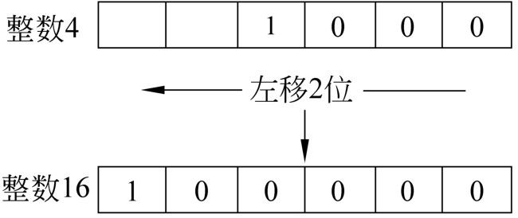
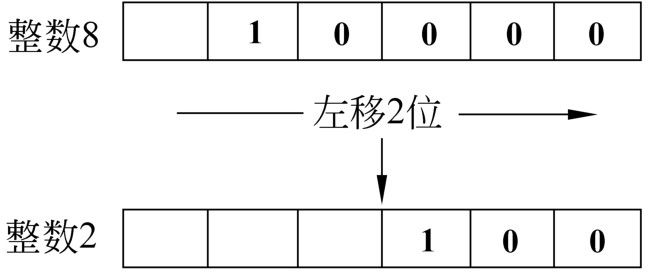

第4章
条件测试和判断语句
作为一个实用的、能够解决实际问题的Shell程序，必须能够根据执行过程中的各种实际情况来做出正确的选择。实际上，这也是各种程序设计语言都必须解决的一个问题。
Shell提供了一系列的条件测试来处理程序执行过程中的各种情况，并做出进一步的操作。本章将介绍各种条件测试的基本语法，以及Shell程序的基本流程控制语句判断语句的使用方法。
本章主要涉及的知识点有如下所述。
- 条件测试：主要介绍Shell程序中的文件、变量、字符串数值，以及逻辑等条件测试。
- 条件判断语句：介绍基本的if、if else，以及if elif语句的使用方法。
- 多条件判断语句case：主要介绍case语句的基本语法，以及使用case语句来解决一些实际问题。
- 运算符：主要介绍Shell中常用的运算符的使用方法，例如算术运算符、位运算符，以及自增、自减运算符等。
4.1 条件测试
为了能够正确处理Shell程序运行过程中遇到的各种情况，Shell提供了一组测试运算符。通过这些运算符，Shell程序能够判断某种或者几个条件是否成立。条件测试在各种流程控制语句，例如判断语句和循环语句中发挥了重要的作用，所以，了解和掌握这些条件测试是非常重要的。本节将介绍常见的条件测试。
4.1.1 条件测试的基本语法
在Shell程序中，用户可以使用测试语句来测试指定的条件表达式的条件的真或者假。当指定的条件为真时，整个条件测试的返回值为0；反之，如果指定的条件为假，则条件测试语句的返回值为非0值。对于熟悉其他的程序设计语言，例如Java或者C的用户来说，这一点非常重要，因为在这些语言中，通常情况下，条件表达式的值为真时，整个表达式的值为非0值；而当条件表达式的值为假时，这个表达式的值为0。
 注意：在Shell程序中，条件测试中的指定条件为真时，条件测试的返回值为0。这主要是为了保持与Shell程序的退出状态一致。当某个Shell程序成功执行后，该进程会返回一个0值；而如果该程序执行错误，则会返回一个非0值。
注意：在Shell程序中，条件测试中的指定条件为真时，条件测试的返回值为0。这主要是为了保持与Shell程序的退出状态一致。当某个Shell程序成功执行后，该进程会返回一个0值；而如果该程序执行错误，则会返回一个非0值。
条件测试的语法有两种，分别是test命令和[命令，下面对这两种语法进行介绍。
在绝大部分的Shell中，test都是作为一个内部命令出现的。当然，在某些Shell中，同时也提供了一个相同名称的外部命令。但是，在使用test命令进行条件测试的时候，如果没有指定绝对路径，则使用的都是内部命令。test命令的语法如下：
其中，参数expression表示需要进行测试的条件表达式，可以由字符串、整数、文件名，以及各种运算符组成。例如，下面的表达式都是有效的条件表达式：
- 1 -eq 2
- ‘string’
- -z ‘string’
- -e file
在上面的表达式中，第1个用来测试两个整数是否相等；第2个和第3个都是用来测试字符串是否为空；第4个用来测试指定的文件是否存在。关于这些表达式的语法，将在后面的内容中详细介绍。
除了使用test命令之外，还有一个内部命令同样可以进行条件测试，该命令的名称为[，这是一个左方括号。与test命令一样，[命令的作用也是对后面的条件表达式进行测试，但是为了增加程序的可读性，Shell要求在条件表达式后面追加一个右方括号]来与前面的[命令配对。因此，[命令的语法如下：
在上面的语法中，[是条件测试命令，参数expression是一个条件表达式。其中expression的语法与上面的test命令中的语法完全相同。条件表达式和左右方括号之间都必须有一个空格。
注意：作为初学者，必须弄清楚一个事实，那就是左方括号[是一个Shell命令，而非条件表达式的一部分。而命令与参数之间必须保留一个空格。正因为如此，在上面的语法中，expression与左右方括号之间也必须都保留一个空格。
4.1.2 字符串测试
在任何程序设计语言中，字符串都是最常见的数据类型之一。通常情况下，对于字符串的操作主要包括判断字符串变量是否为空，以及两个字符串是否相等。在Shell中，用户可以通过5种运算符来对字符串进行操作，如表4-1所示。
表4-1 字符串运算符
| 运 算 符 | 说 明 |
| string | 判断指定的字符串是否为空 |
| string1 = string2 | 判断两个字符串string1和string2是否相等 |
| string1 != string2 | 判断两个字符串string1和string2是否不相等 |
| -n string | 判断string是否是非空串 |
| -z string | 判断string是否是空串 |
对于表4-1中的第一种运算符，也就是单独给定一个字符串的形式，只能使用test命令来测试是否为空串，而不能使用方括号的方式来测试。对于其他4种运算符，都可以使用test命令或者方括号来进行测试。另外，在进行字符串比较的时候，用引号将字符串界定起来是一个非常好的习惯，即使参与测试的字符串为空串。
【例4-1】演示字符串测试的使用方法，代码如下：
在上面的例子中，我们都是通过运算符来对一个字符串进行测试。这在后面介绍的Shell程序流程控制中，使用非常普遍。
注意：在给变量赋值的时候，等号“=”左右两边一定不要有空格；否则，Shell会把空格前面的字符串当做Shell命令。
另外，对于两个字符串的测试也是很常见的，下面举例说明。
【例4-2】演示Shell中比较两个字符串值的方法，命令如下：
从上面的例子可以得知，包含在双引号中的变量名在引用的时候会被变量的值取代，这称为变量的部分引用。关于变量的引用，已经在3.3节中介绍。
注意：$?是一个系统变量，用来获取Shell命令的执行状态。如果执行成功，则返回值为0；否则，返回1。在没有学习流程控制语句之前，本书先使用$?来获取条件测试的结果。
接下来，再看一些比较特殊的例子。在实际的操作系统环境中，经常会遇到字符串中含有空格的情况。在Shell中，空格也是字符串本身的一部分。
【例4-3】说明空格对于字符串比较结果的影响，代码如下：
在上面的例子中，字符串变量$a的末尾比$b多了一个空格。从而导致这两个字符串变量的值并不相等。在实际的编程过程中，一定要注意这种情况，避免由于空格问题导致程序错误。
另外，在Shell中，字符串中的字母也是区分大小写的，请参见下面的例子。
【例4-4】演示字母大小写对于字符串比较结果的影响。在下面的命令中，参与比较的两个字符串的区别仅仅在于字母h的大小写方面，如下所示。
最后，再介绍一个初学者经常遇到的问题。我们执行以下代码：
从表面上看，这个例子与前面介绍的几个例子并没有太大的区别。其中变量$a的值是“Apple”，变量$b的值是“Orange”。但是，第5行的比较结果的值为0。我们知道，0意味着这两个字符串的值相等。而在第1行和第2行中，这两个变量的值明显是不同的。那么究竟是哪个地方出现了问题呢？
实际上，问题就出在第3行中。根据Shell的要求，运算符的左右两边必须保留空格。而在上面的例子中，表达式被写成了以下形式：
在这种情况下，Shell并不认为其中的等号“=”是一个字符串运算符，而看做是一个普通的字符。所以，上面的例子实际上相当于执行以下字符串测试：
也就是说，实际上是测试某个字符串是否为空。上面的字符串“Apple=Orange”当然不是空串，所以，无论变量$a和$的值是什么，上面的例子的测试结果永远是0。
注意：在测试运算符“=”、“!=”，以及“-z”等符号的左右两边，一定含有一个空格。
4.1.3 整数测试
在程序设计中，两个整数值的比较是经常遇到的情况，也是算术运算中比较简单的运算。例如，当某个Shell程序执行结束后，会返回一个整数值，用户可以根据这个返回值是否大于0来判断程序是否执行成功。
与字符串测试类似，整数测试也有两种形式的语法：
或者
其中，number1和number2分别表示参与比较的两个整数，可以是常量或者变量。op表示运算符。
通常情况下，用户会比较两个整数值是否相等或者哪个数值比较大。对于这些运算， Shell都分别提供了相应的运算符。例如，用户可以使用-eq运算符来比较两个整数值是否相等，使用-ne运算符来比较两个整数值是否不相等，使用-gt运算符来测试某个整数是否大于另外一个整数。表4-2列出了常见的整数运算符及其使用方法。
表4-2 常见整数运算符
| 运算符 | 说 明 |
| number1 -eq number2 | 比较number1是否等于number2。如果相等，测试结果为0 |
| number1 -ne number2 | 比较number1和number2是否不相等。如果number1和number2不相等，测试结果为0 |
| number1 -gt number2 | 比较number1是否大于number2。如果number1大于number2，测试结果为0 |
| number1 -lt number2 | 测试number1是否小于number2。如果number1小于number2，测试结果为0 |
| number1 -ge number2 | 测试number1是否大于等于number2。如果number1大于等于number2，测试结果为0 |
| number1 -le number2 | 测试number1是否小于等于number2。如果number1小于等于number2，测试结果为0 |
在整数测试中，最简单的方法就是直接比较两个常数的大小，如下面的例子所示。
【例4-5】比较两个整数是否相等，命令如下：
从上面的执行结果可以得知，12并不等于14。
【例4-6】比较两个整数的大小，命令如下：
从上面第4行的输出结果中可以得知，12并不大于14，因此-gt运算的结果为1；从第8行的输出结果可以得知，12小于14，因此-lt运算的结果为0。
下面再介绍一下参与比较的一方是整数变量，而非常数的情况，请参见下面的例子。
【例4-7】比较变量与常数的大小，命令如下：
从第6行可以得知，变量$x的值等于365；而第10行的结果表示变量$x的值大于364。
在许多情况下，参与比较的两个操作数往往都是变量，对于这种情况，其操作方法与前面基本相同，下面的例子就演示了这种情况。
【例4-8】比较两个变量值的大小。在本例中，首先定义两个整数变量$x和$y，然后判断变量$x是否小于或者等于变量$y，代码如下：
从上面第8行的执行结果可以得知，第6行的表达式所表示的条件为假。
对于初学者来说，经常犯的一个错误就是错误地使用运算符。在进行整数比较的时候，一定要是表4.2列出的运算符。但是，由于受到其他程序设计语言的影响，初学者可能会使用字符串运算符中的“=”和“!=”来进行整数比较，下面的例子就说明了这种情况。
【例4-9】使用“=”比较两个整数会导致错误结果，命令如下：
在上面的例子中，尽管两次比较的结果都是1，表示这两个值不相等。但是，这两次的比较的过程却有本质的区别。其中，第2行的比较实际上是将这两个整数作为字符串来比较的，因此，相当于以下运算：
而第6行则是真正地将12和13作为整数值来比较。
另外，表4-2列出的运算符仅仅是针对整数运算的。如果使用了非整数，则会出错，如【例4-10】所示，代码如下：
上面例子的第6行给出了错误信息，提示用户需要整数表达式。
注意：字符串运算符和整数运算符不可以混用，初学者一定要注意。
4.1.4 文件测试
在任何程序设计语言中，文件的操作都是必不可少的一部分。同样，Shell也提供了许多与文件有关的操作符。通过这些操作符，用户可以对文件的状态进行检测。例如，判断文件是否存在，以及文件是否可读写等。
文件测试的语法如下：
或者
在上面的语法中，op表示操作符，常用的操作符参见表4-3，其中file表示要测试的文件名。
表4-3 常用文件操作符
| 操作符 | 说 明 |
| -a file | 文件是否存在。如果文件file存在，则结果为0 |
| -b file | 文件是否存在，且为块文件。如果文件file是一个已经存在的块文件，则结果为0 |
| -c file | 文件是否存在，且为字符文件。如果file是一个已经存在的字符文件，则结果为0 |
| -d file | 文件是否存在，且为目录。如果文件file是一个已经存在的目录，则结果为0 |
| -e file | 同-a操作符 |
| -s file | 文件的长度是否大于0或者文件为非空文件。如果file是一个非空文件，则结果为0 |
| -f file | 文件存在，并且为常规文件。如果file是一个已经存在的常规文件，则结果为0 |
| -w file | 文件是否存在且可写。如果文件file是一个可写文件则结果为0 |
| -L file | 文件是否存在，并且为符号链接。如果文件file是一个已经存在的符号链接，则结果为0 |
| -u file | 文件是否设置suid位。如果文件file已经设置了suid位，则结果为0 |
| -r file | 文件是否存在，并且可读。如果文件file是一个已经存在的可读文件，则结果为0 |
| -x file | 文件是否存在，并且可执行。如果文件file是一个已经存在的可执行文件，则结果为0 |
从表4-3中可以看出，文件操作符的功能主要有3个方面，分别是检测文件是否存在、文件的类型，以及文件的访问权限。下面分别对这3个方面的功能进行介绍。
在Shell程序中，用户可以通过操作符检测某个特定的文件是否存在。为了便于介绍，我们首先看一下当前目录的内容，如下所示。
从上面的执行结果可以得知，当前目录中包含一个目录、两个常规文件，以及一个可执行文件。
【例4-11】通过文件操作符来判断文件是否存在，代码如下：
在上面的代码中，第1行使用test命令配合-a操作符来判断名称为file1的文件是否存在。从第3行的结果中可以得知，这个文件是存在的。这与我们上面列出的目录内容是一致的。
【例4-12】判断文件是否存在。在本例中，我们指定一个不存在的文件，以验证操作符能否返回正确的值，代码如下：
从上面的执行结果可以得知，由于当前目录中并不存在名称为file3的文件，所以第3行的输出结果为1。
在某些情况下，用户可能需要判断指定的文件的类型，例如，该文件是否为目录，是否为常规文件，是否为块文件，以及是否为空文件等。这些信息都可以通过操作符来获取，下面分别举例说明。
【例4-13】通过操作符判断各种文件类型，代码如下：
在上面的代码中，第2行使用-d操作符判断指定的文件是否为目录，由于dir1是一个已经存在的目录，所以该操作符的执行结果为0。第6行使用-f操作符判断指定的文件是否为常规文件，由于file1是一个普通的文件，所以该操作符的执行结果为0。第10行使用-s操作符判断指定的文件是否为非空文件，由于file2是一个0字节的文件，所以该操作符的执行结果为1。第14行使用-b操作符判断指定的文件是否为块文件，由于file1是一个常规文件，所以该操作符的执行结果为1；而第18行中的/dev/sda是一个块文件，所以该操作符的执行结果为0。第22行使用-c操作符判断指定的文件是否为字符文件，由于控制终端/dev/tty是一个字符文件，所以该操作符的执行结果为0。
通过操作符还可以判断文件的访问权限。在Linux中，文件的访问主要包括读、写、执行，以及是否设置用户ID（setuid）和组ID（setgid）标志等。
【例4-14】通过文件测试判断用户对文件的访问权限，代码如下：
在上面的命令中，第2行使用-w操作符判断当前用户对于指定的文件file1是否拥有写入的权限。由于文件file1的权限为-rw-r--r--，所有者拥有写入的权限，所以该操作符的执行结果为0。第6行是用-r操作符来判断当前用户是否拥有对于文件file1的读取权限，从上面的文件权限中可以得知，所有的用户都拥有读取权限，所以该操作符的执行结果为0。第10行使用-x操作符判断当前用户是否拥有文件file1的执行权限，从上面的权限中可以得知，任何用户都没有执行该文件的权限，所以该操作符的执行结果为1；而文件hello.sh的权限为-rwxr-xr-x，这意味着所有的用户都拥有执行该文件的权限，所以第14行中的-x操作符的执行结果为0。
在Linux中，文件的访问权限可以使用chmod命令来设置。关于该命令的详细使用方法，请参考有关书籍。下面举一个简单的例子来说明该命令的使用方法。
【例4-15】使用chmod命令为hello.sh文件设置setuid权限，这样的话，执行该文件的用户就会临时拥有该文件所有者所拥有的权限。命令如下：
第1行使用chmod命令的u+s选项为hello.sh文件设置了setuid权限。我们可以从第7行的文件访问权限属性中的得知，该文件的权限属性为-rwsr-xr-x。第8行使用-u操作符判断hello.sh文件是否设置了用户ID权限，从第10行的输出可以得知，-u操作符返回了正确的结果。
注意：除了表4-3列出的文件操作符之外，还有其他一些文件操作符，例如-nt表示某个指定的文件修改时间是否比另外一个文件晚，-ot表示某个指定的文件的修改时间是否比另外一个文件早。当执行成功时，这些操作符的执行结果都是0。
在Shell编程中，文件测试应用非常广泛。例如，当在程序中创建了一个新的文件之后，我们可以使用-a或者-e操作符来判断是否创建成功。另外，在写入文件的时候，我们也可以先通过-w操作符判断当前用户是否拥有写入该文件的权限，从而保证程序的正常执行。
4.1.5 逻辑操作符
前面介绍的字符串测试、整数测试，以及文件测试都是提供了一个测试条件。而在Shell编程中，经常遇到同时判断多个条件的情况。Shell中的逻辑操作符可以将多个不同的条件组合起来，从而构成一个复杂的条件表达式。常用的逻辑操作符如表4-4所示。
表4-4 常用的逻辑操作符
| 操 作 符 | 说 明 |
| ! expression | 逻辑非，条件表达式expression的值为假，则该操作符的运算结果为真 |
| expression1 -a expresion2 | 逻辑与，条件表达式expression1和expression2的值都是真时，整个表达式的值才为真 |
| expression1 -o expression2 | 逻辑或，条件表达式expression1或者expression2的值有一个为真时，整个表达式的值就为真 |
在表4-4中，一共列出了3个逻辑操作符，分别为逻辑非、逻辑与和逻辑或。其中，逻辑非表示取反，使用感叹号“!”表示。逻辑非只连接一个条件表达式，其执行结果是将该条件表达式的值变成相反的值。因此，如果条件表达式expression的值为真的话，则应用“!”操作符之后，整个表达式的值就为假，反之亦然。
逻辑与使用“-a”表示，连接两个条件表达式，只有expression1和expression2的值都为真时，整个表达式的值才为真。
逻辑或使用“-o”表示，同样连接两个条件表达式，但是与逻辑与不同之处在于，只要expression1和expression2中有一个条件为真，整个表达式的值就为真。
正因为逻辑与和逻辑或有上述特点，所以Shell在处理逻辑操作符时，不一定会将整个表达式中的各个条件都计算完成才会得到整个表达式的值。在逻辑与中，如果第一个表达式expression1的值为假，则无论expression2的值是否为假，整个表达式的值必定为假，因此，就无需再去计算expression2的值；在逻辑或中，如果第一个表达式expression1的值为真，则整个表达式的值必定为真，此时也无需计算expression2的值。
【例4-16】判断整数变量$a的值是否大于20，并且小于60，代码如下：
从第5行的输出结果中，可以得知整个表达式的值为真。
【例4-17】通过条件测试来判断当前用户是否拥有某个文件的写入权限，代码如下：
在上面的代码中，第1行使用-e操作符和-w操作符，分别判断文件file1是否存在和可写，然后使用-a操作符将这两个条件连接起来。第3行的输出结果表示文件file1同时满足这两个条件。
4.2 条件判断语句
在程序执行的过程中，总会遇到各种各样的情况。而作为一个功能相对完善的程序来说，应该可以根据不同的情况来选择执行不同的代码。此时，我们需要用到条件判断语句。条件判断语句是一种最简单的流程控制语句，该语句使得程序根据不同的条件来执行不同的程序分支。本节将介绍Shell程序设计中的简单的条件判断语句。
4.2.1 使用简单的if语句进行条件判断
条件判断语句使用if语句来实现。最简单的if语句的语法如下：
在上面的语法中，expression通常代表一个条件表达式，但是也可以是Shell命令。因为在Shell中，每个命令都会有一个退出状态码，如果某个命令正常退出了，则其退出状态为0；如果执行错误，则其退出状态为通常为非0。这种规定与其他程序设计语言有所不同，因为在绝大部分的程序设计语言里面，0通常表示假，而非0则表示真。所以，读者在学习Shell程序设计的时候，一定要注意这点。
在if语句中，只有当expression的值为真时，才执行then子句后面的语句。then子句后面可以跟随多条语句，例如statement1、statement2……。当expression的值为真时，会依次执行这些语句。由于Shell没有提供大括号{}来表示代码块，所以需要使用fi关键字来表示if结构的结束。
为了使得代码更加紧凑，在某些情况下，我们可以将if子句和then子句写在同一行中。此时，需要在expression表达式后面加上一个分号，如下：
分号的作用是表示if子句已经结束，后面的代码是then子句。
注意：在Shell程序中，如果想要将多条命令放在同一行中，则需要使用分号将其隔开。
【例4-18】通过条件测试判断文件类型，代码如下：
上面的例子非常简单，其中，第4行通过if语句判断/bin/bash是否是一个常规文件。如果是的话，就通过第5行的echo语句输出一行提示信息。
该程序的执行结果如下：
从上面的执行结果可以得知，/bin/bash是一个已经存在的常规文件。通常情况下，当我们在Shell程序创建一个文件的时候，需要判断该目标文件是否创建成功，然后再采取下一步的行动。
【例4-19】通过条件测试判断文件是否创建成功，代码如下：
第4行通过echo命令结合重定向操作符在当前目录中创建了一个名称为msg.log的文本文件。第5行通过条件测试来判断msg.log文件是否存在。如果文件已经存在，则表示文件创建成功；否则，表示文件创建失败。出于测试的目的，在上面的例子中，如果文件创建成功，只是简单地输出一行提示信息。
以上程序的执行结果如下：
注意：在if语句中，如果使用条件测试，可以使用test命令，也可以使用方括号[]。
当我们在Shell程序中使用代码创建或者修改某个文件的时候，首先判断一下文件是否创建成功，或者判断文件是否存在是一个非常好的习惯。它有效地避免了许多Shell程序中意想不到的问题。当然，在实际的应用场合，当检测到文件没有创建成功或者不存在的时候，会执行重新创建或者输出错误信息的有关代码，而在上面的例子中，我们只是简单地输出提示信息。
在Shell中，还有一个特殊的命令，称为空命令，其表示方法是一个冒号“:”，该命令不做任何事情，但是它的退出状态永远是0。因此，如果我们将该命令作为if语句中的条件，则会永远执行then子句，如下面的例子所示。
【例4-20】使用空命令作为判断条件，代码如下：
由于空命令“:”的退出状态永远是0，所以以上程序的输出结果永远如下：
在实际的编程中，有人喜欢使用&&操作符来代替if语句，如下面的例子所示。
【例4-21】使用&&操作符代替if语句，代码如下：
上面代码的第4行是一个比较复杂的语句。在该语句中，首先是一个test条件测试，其测试的内容是whoami命令的执行结果是否不等于root。如果条件为真，则执行&&后面括号中的语句，即输出一行提示信息，然后通过exit语句退出程序。
如果以root用户的身份执行【例4-21】，则没任何输出，如下：
而当我们切换到其他用户再执行该程序时，则会输出有关提示信息，如下：
注意：在使用if语句的时候，一定不要漏掉最后的结束标志fi。否则会出现以下错误：
4.2.2 使用if else语句进行流程控制
尽管简单的if语句的功能已经非常强大，但是在绝大部分的情况下，我们需要面对的不止一种情况。例如，在4.2.1节的最后一个例子中，我们只是判断了文件创建成功的情况，并且当文件成功之后，会输出一行提示信息。那么当文件创建不成功的时候，则没有任何输出信息，这显然对用户是不友好的。因此，我们需要在文件没有创建成功的时候，为用户给出适当的提示信息。
if else语句的基本语法如下：
在上面的语法中，expression表示if语句的执行条件，可以是条件表达式或者一个Shell命令。如果expression的值为真，则执行then子句中的语句statement1、statement2……。如果expression的值为假，则执行else子句中的语句，包括statement3、statement4……，最后通过fi关键字结束整个if代码块。
【例4-22】说明if else语句的使用方法，代码如下：
在上面的代码中，第5行输出要求用户输入数字的提示信息。第7行通过read语句从键盘读取用户输入的数字。第9行则通过整数条件测试来判断用户输入的数字是否大于10，如果大于10，则通过第11行输出大于1的信息；否则，通过第15行的echo语句输出用户输入的数字小于或者等于10的提示信息。
以上代码的执行结果如下：
在上面的命令执行的过程中，第3行输入数字6，第4行则输出用户输入的数字小于或者等于10的提示信息。当我们在第7行中输入数字12之后，程序则在第8行输出数字大于10的提示信息。
注意：在【例4-22】中，我们接收了用户输入的数据之后，就直接与给定的数值进行比较了。但是在实际的生产环境中，用户可能没有输入任何东西，而是直接按回车键，或者输入其他非数字的字符。对于这些情况，我们通常可以先用一个外层的if else语句进行判断，使得只有符合要求的数据才能进入内部的if else语句进行比较。这样的话，可以提高程序的健壮性。
实际上，if else语句不仅可以处理比较简单的两个分支的情况，还可以通过嵌套来处理多个分支的情况，下面的例子就说明了这种情况。
【例4-23】演示如何通过if else语句根据学生的百分制成绩来输出五分制成绩，代码如下：
在上面的例子中，程序将用户输入的成绩分成A～E共5个等级。以上程序的执行结果如下：
在前面的例子中，我们分别列举了简单的if else和两层嵌套的if else结构的使用方法。实际上，Shell中的if else结构并没有限制嵌套的层数，因此，用户可以根据自己的需要来灵活地使用这种流程控制结构。
4.2.3 使用if elif语句进行多条件判断
在【例4-23】中，我们介绍了嵌套的if else语句的使用方法。尽管这种方法可以很好地处理多个分支的情况，但是读者可能会发现一个非常严重的问题，那就是整个程序的条理看起来很不清楚，经常会出现漏掉fi的情况。为此，我们应该寻找更好地能够处理多分支情况的方法。
除了if else语句之外，Shell还提供了一个if elif语句，通过该语句，用户可以以比较优雅的方式来处理多分支情况。if elif语句的基本语法如下：
在上面的语法中，expression1表示整个if elfi语句结构中的第1个条件表达式，如果该条件表达式的值为真，则执行第1个then子句中的语句statement1及statement2等；否则，继续下面的判断。如果表达式expression2的值为真，则执行第2个then子句中的语句，以此类推。如果所有的条件表达式的值都为假，则执行最后的else子句中的语句。最后是if elif结构的结束标志fi。
【例4-24】本例对【例4-23】进行改进，使得该程序的可读性更强，代码如下：
在上面的程序中，我们用一个if elif语句来代替多层嵌套的if else语句，从而使得整个程序的可读性大大增强。关于该程序的执行方法与【例4-23】完全相同。
4.2.4 使用exit语句退出程序
在Shell程序执行的过程中，有时用户可能需要在满足某个条件的时候退出程序的执行。在这种情况下，我们可以通过if语句配合exit语句来实现。exit语句的基本作用是终止Shell程序的执行。除此之外，exit语句还可以带一个可选的参数，用来指定程序退出时的状态码。exit语句的基本语法如下：
其中，status参数表示退出状态，该参数是一个整数值，其取值范围为0～255。与其他的Shell命令的一样，Shell程序的退出状态也储存在系统变量$?中，因此，用户可以通过该变量取得Shell程序返回给父进程的退出状态码。
按照惯例，退出状态0意味着脚本成功运行完毕；而非0通常意味着程序执行过程出现某些错误，具体的错误可以根据具体的状态码来判断。正因为如此，用户可以用其他的非0值来给父进程传递不同的消息，根据子进程的成功或者失败，父进程采取不同的动作。如果没有参数给exit语句，则脚本的退出状态码就由脚本中最后执行的语句来决定，也就是由exit语句之前的那条语句的执行状态来决定。
【例4-25】演示在不同的情况下，程序返回不同的状态码，代码如下：
在上面的代码中，第5行使用echo语句输出一个字符串。第8行输出上一条语句的退出状态。第11行是一个无效的命令，正因为无效，所以该语句会执行失败，第13行输出了这条无效命令的退出状态码。第16行使用exit语句退出程序，并且指定返回状态为120。
该程序的执行结果如下：
其中，执行结果第3行输出的是代码中第5行的echo语句的退出状态。执行结果第5行的127是代码中第11行的无效命令的执行状态，我们可以发现，成功执行的语句的退出状态为0，而执行错误的语句的退出状态为非0。因为代码中的最后一行的exit语句执行后整个程序就退出了，所以没有输出状态码，我们可以在Shell中通过以下命令获取：
从上面的执行结果可以发现，ex4-25.sh这个脚本的退出状态码为120。
注意：尽管用户可以在程序中设置自己的退出状态码，但是通常情况下每个状态码都有特定的涵义，因此在返回这些状态码的时候一定要注意，避免执行脚本时产生误解。
通常情况下，exit语句与if语句相互配合可以更灵活地控制程序的流程，请参考下面的例子。
【例4-26】使用if和exit语句，使得程序在适当的时候退出。代码如下：
在上面的代码中，第5行判断用户输入的文件名是否存在，如果已经存在，则通过第7行输出提示信息，第8行通过exit语句退出程序，并且设置退出状态码为1；如果文件不存在，则通过第11行创建指定的文件，第12行输出提示信息，第13行通过exit语句退出程序，并且设置退出状态码为0。
该程序的执行结果如下：
从上面的执行结果可以得知，当指定的文件存在时，程序的退出状态码为1；当指定的文件不存在的时候，程序的退出状态码为0。这些退出状态码可以提供给其他程序，使得其他程序能够根据【例4-26】的执行结果而采取相应的动作。
4.3 多条件判断语句case
4.2节介绍了通过if elif语句来处理多分支的情况。实际上，与大多数程序设计语言一样，Shell也提供了一个专门处理多分支情况的语句，即case语句。通过使用case语句，可以使得程序更加有条理性，本节将介绍case语句的使用方法。
4.3.1 多条件判断语句case的基本语法
case语句的基本语法如下：
在上面的语法中，variable是一个变量，case语句会将该变量的值与value1～valuen中的每个值相比较，如果与某个value的值相等，则执行该value所对应的一组语句。当遇到“;;”符号时，就跳出case语句，执行esac语句后面的语句。如果没有任何一个值与variable的值相匹配，则执行*后面的一组语句。
对于上面的case语句，用户应该注意以下几点：
- 对于变量名variable，可以使用双引号，也可以不使用。
- 每个case子句中的条件测试部分，都以右括号“)”结束。
- 每个case子句都以一对分号“;;”作为结束符。在脚本执行的过程中，当遇到一对分号时，会跳过当前case子句后面的所有的case子句，包括*所对应的子句，执行esac子句后面的其他的语句。
- case语句结构以esac结尾。这与if语句以fi结尾是一样的，都是以前面一个单词的所有字母的逆序排列作为结束标记。
4.3.2 利用case语句处理选项参数
使用case语句来处理选项参数在Shell中非常普遍，尤其是/etc/init.d目录中服务脚本，几乎都含有一个或者多个case语句。例如，下面给出的是Java应用服务器Resin的一个服务脚本的部分代码：
在上面的代码中，第1行通过系统变量$1接收用户执行命令时的参数，这些参数可以取4个值，分别是start、stop、status及restart，其涵义分别表示启动Resin服务、停止Resin服务、查看Resin服务状态，以及重新启动Resin服务。在每个子句中，都有一组执行相应操作的语句。如果用户输入了这4个值以外的参数，则执行*对应的子句，提示用户使用方法。
我们可以通过以下方法来对Resin服务执行相应的操作。例如，下面的命令启动Resin服务：
而以下命令查看Resin服务的状态：
以下命令停止Resin服务：
注意：在适当的时候使用case语句可以提高程序的可读性。
4.3.3 利用case语句处理用户输入
除了处理参数之外，使用case语句还可以处理用户多种不同的输入，从而根据不同的数据执行不同的代码，请参见下面的例子。
【例4-27】说明case语句的使用方法，代码如下：
在上面的代码中，第7行读取用户按下的键；第9行是case语句的开始，将变量keypress作为条件变量；第11行测试变量keypress对应的键值是否是小写字母，如果是小写字母，则输出相应的提示；第14行测试变量keypress的对应的键值是否是大写字母；第17行测试变量keypress对应的键值是否是0～9之间的数字；第20行使用星号匹配其他的情况。
该程序的执行结果如下：
在第3行中，输入了一个小写字母a，第7行输入了一个大写字母B，第11行输入一个数字8，第15行输入一个问号。程序分别根据用户输入的字符进行相应的输出。
4.4 运算符
关于运算符，在4.1节中已经介绍了一些，例如字符串运算符、数值运算符，以及文件运算符等。关于这些运算符的详细使用方法，请参考表4-1。除了这些运算符之外，还有其他的与数值有关的运算符，例如算术运算符、位运算符，以及自增/自减运算符等，本节将介绍这些运算符的使用方法。
4.4.1 算术运算符
与其他的程序设计语言一样，Shell中的算术运算符也主要包括加（+）、减（-）、乘（*）、除（/）、求余（%），以及幂运算（**）等。表4-5列出了常用的算术运算符及其使用方法。
另外，在Linux Shell中，用户可以通过4种方式来执行算术运算，这4种方式分别如下。
表4-5 常用算术运算符及其用法
| 运算符 | 说 明 | 举 例 |
| + | 求2个数的和 | 例如1+5是求1和5的和 |
| - | 求2个数的差 | 例如9-3是求9和3的差 |
| * | 求2个数的乘积 | 例如2*4是求2和4的乘积 |
| / | 求2个数的商 | 例如28/4是求28除以4的商 |
| % | 求余 | 例如23%4是求23除以4后的余数，即3 |
| ** | 幂运算 | 例如3**3是求33的值，即27 |
1．使用expr外部程序
expr是一个Shell命令，可以计算某个表达式的值，其基本语法如下：
其中，expression是要计算的表达式。
【例4-28】演示使用expr命令来计算不同的算术运算，代码如下：
在上面的代码中，我们使用单反引号“'”将expr和算术表达式引起来。其中第5行计算2和100的差；第8行计算2和100的和；第11行计算2和5的乘积，其中的星号表示乘法运算，而反斜线“\”是转义字符；第14行计算24和8的商；第17行是一个复合运算，先计算括号里面的2和6的差，然后再计算括号外面的乘法；第20行、第23行和第26行是采用紧凑格式来书写算术表达式，即运算符的左右两边没有空格。
该程序的执行结果如下：
在上面的执行结果中，第2行是第5行代码的计算结果，第3行是代码第8行的计算结果，第4行代码是第11行的计算结果，第5行是代码第14行的计算结果，第6行是第17行的计算结果。上述语句都得到了正确的结果。
接下来我们再看一下输出结果中的第7行，在这一行中，程序并没有计算2和5的和，而是直接输出了这个表达式。同样，输出结果中的第8行也是直接输出了算术表达式，而非计算结果。第9行和第10行的错误消息是ex4-28.sh文件中第26行和第27行的执行结果。由于在使用expr进行算术运算的时候需要将括号转义，所以上面的语句执行错误。
注意：在使用运算符时，一定要注意运算符左右两边的空格，否则会得出错误的结果。另外，expr命令不能计算幂运算。另外，在【例4-28】中，使用的是反单引号。
2．使用$((…))
使用这种形式来进行算术运算写法比较自由，无需对运算符和括号做转义处理，可以采用松散或者紧凑的格式来书写表达式。
【例4-29】演示如何使用$((..))符号进行算术运算，代码如下：
在上面的代码中，第5行采用紧凑格式来书写算术表达式，即运算符左右没有空格；第8行采用松散格式来书写算术表达式；第11行执行的是乘法运算，没有将乘法运算符星号进行转义处理；第14行执行除法运算；第17行执行求余数运算；第20行是一个复合运算，其中的括号也没有进行转义处理。
该程序的执行结果如下：
从上面的执行结果可以得知，使用$((…))来执行算术运算非常灵活。
3．使用$[…]
使用一个方括号同样可以执行算术运算，这种语法的特点与使用两个圆括号相同，无论是采用紧凑格式还是松散格式，都可以得到正确的结果。另外，算术表达式中的星号和圆括号也无需转义处理。
【例4-30】演示如何使用方括号来进行算术运算，代码如下：
以上程序的执行结果如下：
4．使用let命令
使用let命令可以执行一个或者多个算术表达式，其中的变量名无需使用$符号。如果表达式中含有空格或者其他特殊字符，则必须将其引用起来。
【例4-31】演示使用let命令来执行算术运算，代码如下：
该程序的执行结果如下：
除了表4-5列出的运算符之外，还有一些复合算术运算符，如表4-6所示。
表4-6 复合算术运算符
| 运算符 | 说 明 | 举 例 |
| += | 将左边的数加上右边的数，然后再将和赋给左边的变量 | 例如，3 += 5等于8 |
| -= | 将左边的数减去右边的数，然后再将差赋给左边的变量 | 例如，5 -= 2等于3 |
| *= | 将左边的数乘以右边的数，然后将积赋给左边的变量 | 例如，2 *= 8等于16 |
| /= | 将左边的数除以右边的数，然后再将商赋给左边的变量 | 例如，6 /= 3等于2 |
| %= | 将左边的数对右边的数求模之后，再赋给左边的变量 | 例如，22 /= 3等于1 |
关于这些运算符的使用方法，不再详细说明。
4.4.2 位运算符
对于Shell编程来说，位运算可能使用的比较少，在此只是进行简单地介绍。位运算通常出现在整数间，它针对的不是整个整数，而是其二进制表示形式中的某个或者某些位（bit）。例如，2>>1是将二进制形式的2，即10，左移1位，从而变成100，即4。表4-7列出了常用的位运算符。
表4-7 常用位运算符
| 运算符 | 说 明 | 举 例 |
| << | 左移 | 4 << 2，将4左移2位，结果为16 |
| >> | 右移 | 8 >> 2，将8右移2位，结果为2 |
| & | 按位与 | 8 && 4，将8和4进行按位与运算，结果为0 |
| | | 按位或 | 8 | 4，将8和4进行按位或运算，结果为12 |
| ～ | 按位非 | ～8，将8进行按位非运算，结果为-9 |
| ^ | 按位异或 | 10 ^ 6，将10和6进行按二进制位异或运算，结果为12 |
在表4-7中列出的运算符中，左移运算符“<<”是将整个数字的所有二进制位左移相应的数量，每左移1位，相当于将当前的数字乘以2。右移运算符“>>”是将整个数字的所有二进制位右移相应的数量，每右移1位，相当于将当前的数字除以2。按位与“&”将两个数字的每个二进制位进行与运算。如果这两个位都是1，则运算结果就是1；如果两个位中有任何一个为0，则运算结果就是0。
按位或“|”的运算过程与按位与基本相同，不同之处在于参与按位或运算的两个位中只要有一个位为1，则运算结果就为1；只有两个位都是0的情况下，运算结果才为0。按位非“～”的运算过程是将参与运算的数字的每个二进制位进行非运算，即将原来的1变成0，而将0变成1。按位异或运算的过程与按位与或者按位非基本相同，但是在按位异或的过程中，只要参与运算的两个位的值相同，即同时为0或者同时为1，其运算结果就是1；否则，运算结果为0。
如图4-1和图4-2所示，分别描述了左移和右移的过程。在图4-1中，上面的数字为4，将二进制形式的4左移2位，右边空出的位补0，最后变成了16。
同理，在图4-2中，上面的数字为8，将二进制形式的8向右移动2位，右边的0去掉，最后变成了2。关于其他位运算，其过程大致相同，不再详细说明。下面举例说明移位运算的方法。

图4-1 左移运算

图4-2 右移运算
【例4-32】演示位运算符的使用方法，代码如下：
在上面的代码中，第5行执行左移运算，第8行执行右移运算，第11行执行按位与运算，第14行执行按位非运算，第17行执行按位异或运算。在本例中，我们采用的是$[]的语法来执行算术运算。
该程序的执行结果如下：
除了简单的按位运算符之外，还有一些复合位运算符，表4-8列出了常用的复合位运算符。
表4-8 复合位运算符
| 运算符 | 说 明 | 举 例 |
| <<= | 将变量的值左移指定位数之后重新赋给该变量 | x<<=3，将x的值左移3位，重新赋给变量x |
| >>= | 将变量的值右移指定位数之后重新赋给该变量 | x>>=4，将变量x的值右移4位后重新赋给变量x |
| &= | 将变量的值与指定的数值按位与之后重新赋给该变量 | x&=8，将变量x的值与8按位与运算之后重新赋给变量x |
| |= | 将变量的值与指定的数值按位或之后重新赋给该变量 | x|=7，将变量x的值与7执行按位或运算之后重新赋给变量x |
| ^= | 将变量的值与指定的数值按位异或之后重新赋给该变量 | x^=9，将变量x的值与9执行按位异或运算之后重新赋给变量x |
【例4-33】演示表4-8中列出的复合位运算符的使用方法，代码如下：
该程序的执行结果如下：
至于如何得到上面的执行结果，请读者参照图4-2中的位运算方法，就可以得出结论。
注意：复合运算符针对的都是变量。这是因为只有变量才有赋值的操作。
4.4.3 自增/自减运算符
在Shell中，还有一类称为自增或者自减的运算符，这类运算符的作用是将某个变量自动加1或者减1。这类运算符一共有4种，分别是前置自增、前置自减、后置自增和后置自减，如表4-9所示。
表4-9 自增/自减运算符
| 运算符 | 说 明 |
| ++variable | 先将变量variable的值加1，然后再赋给variable |
| --variable | 先将变量variable的值减1，然后再赋给variable |
| variable++ | 先使用variable的值，然后再将该变量的值加1 |
| variable-- | 先使用variable的值，然后再将该变量的值减1 |
在表4-9中列出的运算符中，前置运算符都是先执行运算，然后再使用表达式的值；而后置运算符则是先使用表达式的值，然后再执行自增或者自减运算。
【例4-34】演示自增或者自减运算符的使用方法，代码如下：
在上面的代码中，第5行定义变量x，并且赋值为5。第7行是一个复合表达式，程序会先执行括号中的++x，将x的值加1，从而变成6，然后再与括号外面的变量x相加，而此时括号外面的变量x的值仍然是5，因此整个表达式的值为11。第10行执行的是前置自减运算，程序会先将x的值减1，从而变成10，然后再将该值赋给变量x。第13行执行的是后置自增运算，因此，整个表达式的值应该是x自增前的值，即10，执行完第13行之后，x的值变为11。第16行执行后置自减运算，先将变量x的值自减，变成10，然后再将10赋给变量x。
该程序的执行结果如下：
对于上面的结果，读者可以对比上面的分析来理解是如何得来的。
注意：无论是自增还是自减运算，都是针对变量而言的。不要对常量或者表达式执行自增或者自减运算，例如5++或者++(4+x)都是错误的。并且自增或者自减运算只能针对整数。
4.4.4 数字常量的进制
默认情况下，Shell总是以十进制来表示数字。但是，用户也可以在Shell中使用其他进制来表示数字，例如二进制、八进制和十六进制。在Shell中，用户可以使用两种语法来表示不同的进制，首先是增加前缀，例如以0开头的数字表示八进制，以0x开头的数字表示十六进制。第二种语法是使用井号“#”，例如2#1000表示二进制，8#42表示八进制。
【例4-35】演示不同的进制的表示方法，代码如下：
在上面的代码中，第5行的数字没有任何前缀，则表示这个数字是十进制数字；第8行的数字使用了前缀0，表示这是用八进制表示的数字；第11行的数字使用了前缀0x，表示这是一个用十六进制表示的数字。
该程序的执行结果如下：
在上面的输出结果中，最后输出的全部是以十进制表示的数字。
【例4-36】演示使用井号“#”来表示不同进制的方法，代码如下：
其执行结果如下：
4.5 小结
本章深入探讨了条件测试、简单条件判断语句、多条件判断语句，以及运算符的使用方法等。主要内容包括条件测试的基本语法、字符串测试、数值测试、文件测试、逻辑操作符、简单的if else语句、if elif语句、case语句，以及算术运算符、位运算符和自增、自减运算符等。重点在于掌握基本的条件测试的语法，以及条件判断的使用方法。在下一章中，我们将介绍另外一种流程控制语句，即循环结构。
Table of contents
- 内容简介
- 前言
- 目录
- 第1篇 认识Shell编程
-
第2篇 Shell编程基础
- 第3章 变量和引用
- 第4章 条件测试和判断语句
- 第5章 循 环 结 构
- 第6章 函数
- 第7章 数组
- 第8章 正则表达式
- 第9章 基本文本处理
- 第10章 流 编 辑
- 第11章 文本处理利器awk命令
- 第12章 文件的操作
- 第13章 子Shell与进程处理
- 第3篇 Shell编程实战
- 附录CD